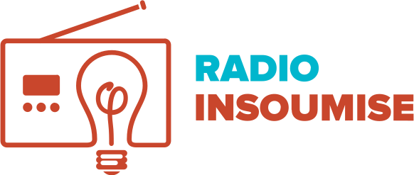

La radio sans cravate
Rejoignez la WebRadio !
Quelles que soient vos compétences, vos experiences, vos ambitions, vous avez la possibilité de nous aider. Les possibilités sont multiples, si vous répondez à ces quelques prérequis et que vous souhaitez venir nous aider, n'hesitez pas à nous contacter via le Discord (Dario#1147 ou Yourigan#0965) ou par mail (radioinsoumise@gmail.com).
Prérequis généraux
- Avoir un micro en bon état et s’exprimer convenablement à l’oral et l'écrit
- Savoir travailler en équipe, ou avoir l'envie d'apprendre
- Ne pas avoir peur de la critique ou des désaccords
Postes à pourvoir
- Rôle
- Hébergement et responsabilité de l’intégrité technique de l’émission.
- Prérequis
- Etre familier⋅e avec OBS (ou accepter d'être formé⋅e, c'est facile et rapide)
- Avoir une bonne connection Internet
- Rôle
- Gestion du montage et de la post-production des travaux (vidéo et audio).
- Prérequis
- Savoir utiliser la suite Adobe ou équivalent libre
- Rôle
- Soutien des différents pôles de travail de la WebRadio. Realisation de documents.
- Prérequis
- Connaître Discord et Youtube
- Capacités rédactionnelles
- Rôle
- Rédiger et animer des formats courts.
- Prérequis
- Avoir un gout prononcé pour l’actualité et la recherche documentaire
- S'exprimer correctement à l'oral et à l'écrit
- Avoir l'esprit à la fois critique et créatif
- Rôle
- Production des supports animés de la radio (séquences d'introduction des émissions par exemple).
- Prérequis
- Maîtrise des logiciels d'animation
- Rôle
- Production des supports visuels de la radio.
- Prérequis
- Maîtrise des logiciels de graphisme
- Rôle
- Animation et modération de la salle d’attente et des chats.
- Prérequis
- Connaître Discord et Youtube
- Capacités rédactionnelles et bonne orthographe
- Rôle
- Donner vie à l’émission et distribuer la parole. Enrichir et guider le débat. Préparer les émissions et gérer les interviews.
- Prérequis
- Être un⋅e bon⋅ne orateur⋅rice
- Rôle
- Production de l'habillage sonore des émissions (génériques, jingles…) et création de l'identité sonore de la radio.
- Prérequis
- Maitrise des logiciels adaptés
- Rôle
- Correction orthographique et syntaxique des documents de la WebRadio.
- Prérequis
- Orthographe et syntaxe parfaite